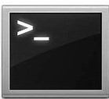

Eingabeaufforderung (CMD)
Diese Woche hatten wir die LBA und LBB Prüfung. Dort mussten wir viel mit CMD und VM-Ware arbeiten.
LBA (Theorieprüfung)
Der ÜK ist diese Woche geendet und wir mussten zwei Prüfungen schreiben, eines davon ist die Theorieprüfung. In dieser Prüfung werden uns auf einem Arbeitsblatt fragen zum Lernstoff des ÜK's gestellt. Bei dieser Prüfung hatte ich leider etwas mühe aber zum Glück zählt die theoretische Prüfung nur 20%. Mein Fehler war, das ich für die Dokumentation die wir in der praktischen prüfung benutzen dürfen zu viel Zeit verwendet habe. Da wir für die Theorieprüfung keine Hilfe hatten war ich ohne das Auswendiglernen aufgeschmissen.
LBB (Praktische Prüfung)
Für die LBB war ich zum Glück wegen meiner Dokumentation bestens vorbereitet. Da die praktische Prüfung 80% der Note ausmacht habe ich mehr Wert darauf gelegt, und mein Plan hat halbwegs funktioniert. Da ich immer nach den ÜK-Tagen recht am Ende war hatte ich keine Kraft um intensiv zu lernen, deswegen konzentrierte ich mich auf meine Dokumentation, damit sie mir schlussendlich in der LBB einen Vorteil verschafft. In der Prüfung hat die Dokumentation mich gerettet, weil ich alle praktische Aufgaben darauf notiert hatte, jeden einzelnen Schritt.
- CMD
- VM-Ware
- IP-Adresse
Fazit
Mein Fazit ist, das ich diese Woche noch anstrengender fand als letzte Woche, doch wenn die ÜK's vorbei sind ist man erleichtert.